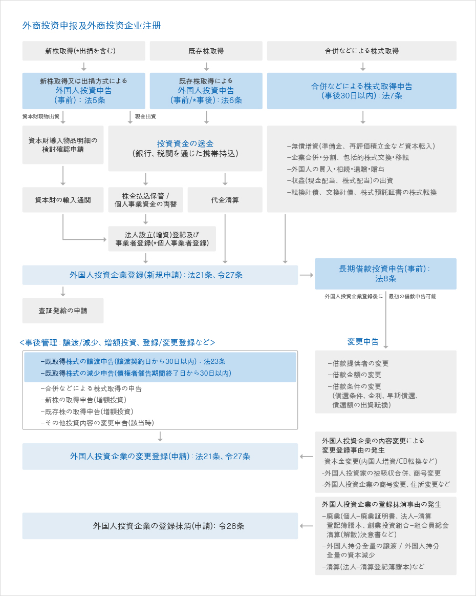

投資申告及び登録
- Home
- 投資ガイド
- 投資手続き
- 投資申告及び登録
外国人投資申告
外国人投資家(代理人)はInvest KOREA又はKOTRA国内貿易館/海外投資拠点貿易館、国内外国為替銀行本·支店、その他指定された外国銀行の国内支店で外国人投資の申告を行う事が出来ます。
- 申告人 : 外国人投資家又は代理人
- 申告受付機関 : 国内の外国為替銀行本·支店、又は指定の外国銀行の国内支店、Invest KOREA又はKOTRA 国内貿易館·海外投資拠点貿易館
- 申告処理期間 : 即時(申告済み証交付)
外国人投資は1993年3月以降、申告制を原則としており、外国人投資申告はその類型によって、株式等の取得前に予め届出を行う事前申告制と株式取得後又は契約締結後に届出を行う事後申告に分けられます。該当類型と内容は次の通りです。
事前申告と事後申告
| 区分 | 申告項目 | 備考 |
|---|---|---|
| 事前申告 | 新株等の取得による外国人投資申告および投資内容変更申告 | |
| 既存株式等の取得による外国人投資申告および投資内容変更申告 | 例外的に事後申告する場合は 取得日から30日以内に申告 | |
| 長期借款方式による外国人投資申告および投資内容変更申告 | ||
| 事後申告 | 合併等による株式等の取得申告
|
取得日から30日以内に申告 |
| 株式等の譲渡申告 | 契約締結日から30日以内に申告 | |
| 株式等の減少申告 | 商法第439条の規定により債権者に対する催告期間終了日から30日以内に申告 | |
| 外国人投資企業登録、変更登録、登録抹消申込 |
提出書類
- 類型別(新株、既存株、長期借款等)外国人投資申告書2部
- 外国人の国籍を証明する書類(外国人の国籍証明書)
- 外国人が法人又は団体の場合：該当国家の政府又はその他権限のある機関が発行した登記簿謄本や当該法人又は 団体が該当国家に所在する事を証明する書類
- 外国人が個人の場合：該当国家の政府又はその他権限のある機関が発行した市民権証明書、旅券等国籍を証明出 来る書類
- 書類但し、外国投資家が大韓民国の国籍を保有している場合には、滞在国家の政府又はその他権限のある機関が発行した永住権証明書、又は大韓民国の在外公館の長が発行した在外国民登録証明書等で代える事が出来る。
必要時の追加添付書類
- 出資目的物に対する証憑書類
- その他の株式取得関連の証憑書類
- 委任状(外国投資家の代理権授与により、その代理人が申告、許可申込み等を行う場合)
類型別の外国人投資申告の手続き
新株等の取得による外国人投資申告
- 外国人が、大韓民国国民(法人)が営む企業が新たに発行する株式等の取得によって外国人投資を行おうとする場合には予め投資申告が必要です。(事前申告)
- 新株取得には
- 新設法人を設立する場合(外国人単独又は内国人との共同出資)
- 国内企業の有償増資に参加する場合
- 外国人が国内で個人事業を営む場合
- 非営利法人に出捐する場合(出捐方式の新株取得)等4つの場合があります。
提出書類
- 新株等の取得による外国人投資申告書2部 (代理申告の場合には委任状を含む)
- 外国投資家の国籍証明書
- その他、出資目的物に該当する必要書類 (必要とする場合のみ提出)
- 産業財産権等の価額評価証明書類
- 支店又は事務所、法人の清算による残余財産証明書類
- 借款、その他海外からの借入金償還額証明書類
- 外国有価証券市場上場法人の株式である事を証明する書類
- 外国人投資促進法又は外国為替取引法により外国人所有の株式である事を証明する書類
- 出資しようとする国内不動産に対する資本取引申告済み証
- 外国人投資促進法又は外国為替取引法により所有する株式又は不動産処分代金である事を証明する書類
すでに申告した内容のうち、外国投資家の商号もしくは名称および国籍、外国人投資金額、外国人投資比率(外国人投資企業の株式等に対する外国投資家所有の株式等の比率)、投資方法、営もうとする事業内容等の事項を変更しようとする場合には、内容変更申告が必要です。
既存株式等の取得による外国人投資申告·許可申込
外国人が、大韓民国国民（法人）が営む企業がすでに発行した株式等の取得により外国人投資を行う場合は、予め投資申告が必要です(事前申告)。但し、証券取引法による株券上場法人又はKOSDAQ上場法人が発行した既存株式等を取得した場合は、取得後30日以内に申告する事が出来ます。
※ 外国人が証券取引法に従い有価証券市場にて9％の株式を取得している状態で、3.5%の株式を追加する場合には(総株式取得比率が10%以上となる場合)、3.5%の追加取得分については外国人投資促進法による外国人投資として認められるため、既存株式等の取得による外国人投資申告(又は許可申請)を行わなければならず、この場合は事前申告の原則の例外となるため、取得後30日以内に申告する事が出来ます。
既存株式の取得には
- 非上場株式に対する外国投資家と韓国内株主間の直接取引
- 有価証券市場又はコスダック(KOSDAQ)市場等に上場された企業の株式を10%以上取得する場合があります。
但し、防衛産業を営む企業に対し、既存株式等の取得によって外国人投資を行おうする場合には予め産業資源部長官の許可を得なければなりません。もし許可規定を違反したまま既存株式等を取得した場合には、その既存株式等に伴う議決権行使が不可能となり、知識経済部長官はその既存株式等について譲渡を命じる事があります。
提出書類
- 既存株等の取得による外国人投資申告書2部(代理申告の場合は委任状を含む)
- 外国投資家の国籍証明書
- 譲受人が複数である場合には特殊関係の可否が確認出来る書類
- その他出資目的物に該当する必要書類(必要な場合)
- 支店又は事務所、法人の清算による残余財産証明書類
- 借款、その他海外からの借入金の償還金証明書類
- 外国有価証券市場上場法人の株式証明書類
- 外国人投資促進法又は外国為替取引法によって外国人が所有する株式証明書類
- 外国人投資促進法又は外国為替取引法によって所有する株式、もしくは不動産処分代金である事を証明する書類
すでに申告した内容や許可を得た内容のうち、外国人投資金額、外国人投資比率、株式譲渡者等の事項を変更する場合にも変更申告もしくは変更許可申告が必要です。
合併等による株式等の取得による外国人投資申告
合併等による株式等の取得は、新株取得又は既存株式取得とは異なり、事前申告ではなく、株式等の取得日より30日以内に申告します（事後申告）。合併等による株式取得申告の場合、大部分は外国人投資企業変更登録申請の対象となります。
合併等による株式取得の類型には
- 外国投資家が当該外国人投資企業の準備金、再評価積立金、その他の法令規定による積立金が資本に転入される事によって発行される株式など等を取得する場合
- 外国投資家が当該の外国人投資企業が他の企業と合併、株式の包括的な交換·移転および会社分割を行う際に所有していた株式等により、その後の存続又は新設法人の株式等を取得する場合
- 外国人が、登録された外国人投資企業の株式等を外国投資家から買入、相続、遺贈又は贈与によって取得する場合
- 外国投資家が法律に従って取得した株式等から生じた収益の出資によって株式等を取得する場合
- 外国人が転換社債、交換社債、株式預託証書、その他これに類似するものを株式等に転換、引受もしくは交換する場合等があります。
提出書類
- 株式又は持分の取得申告書2部 (代理申告の場合は委任状を含む)
- 外国投資家の国籍証明書(新規取得の場合)
- 株式取得を証明する書類(法人登記簿謄本および株主総会決議書、取締役会決議書等)
長期借款方式の外国人投資による外国人投資申告
外国人投資企業の海外親企業又は当該親企業と一定の関係がある企業が当該外国人投資企業に5年以上の借款を貸し付ける事により外国人投資を行う場合には、予め申告が必要です。（事前申告）
長期借款の導入主体は外国人投資企業であり、借款金額は出資目的物ではないため外国人投資企業登録証の記載事項ではありません。但し、申告機関に外国為替買入(預置)証明書を添付して借款到着報告を行わない場合は長期借款による外国人投資として認められません。
提出書類
- 長期借款方式による外国人投資申告書2部(代理申告の場合は委任状を含む)
- 借款契約書写し
- 出資関係を証明する書類および借款提供者の国籍証明書
申告された内容のうち、借款導入金額、借款条件(利率、償還期間、据置期間)等を変更する場合には変更申告を行わなければなりません。
類型別外国人投資手続き



投資資金の送金
投資資金は原則として外国投資家本人の名義で送金しなければならず、この場合国内源泉資金は認められません。資本金導入において銀行は、株金納入保管証明書(法人設立登記時に必要)および外国為替買入証明書(外国人投資企業登録時に必要)を発給します。法人設立登記および事業者登録
必要な諸書類を取り揃えて管轄の法院（裁判所）および税務署で法人設立登記および事業者登録を行います。納入資本金の法人口座の振替
法人設立登記および事業者登録手続きが完了すると、新設会社は法的に有効な法人となり、これにより銀行に保管されている納入資本金は新設法人の口座に振り替えられます。外国人投資企業の登録
外国人投資家（代理人）又は外国人投資企業は以下の事由が発生した場合、該当事由発生日から30日以内に受託機関に外国人投資企業登録を行わなければなりません。
- 出資目的物の納入を完了した場合(新株取得)
- 既存株式を取得した場合(既存株取得)
- 合併等により株式を取得した場合(CB転換、企業分割等の新規取得)
- 非営利法人に対する出捐を完了した場合(出捐方式の新株取得)
提出書類
- 外国人投資企業登録申込書
- 外国人投資企業の法人登記簿謄本(法人事業者)又は事業者登録証の写し
(個人事業者)
- 外国為替買入証明書又は外貨預置証明書の写し
- 株主名簿(法人印鑑捺印、原本対照済み)又は株式代金の譲受·譲渡証憑書類
必要時の追加添付書類
- 出資目的物に対する証憑書類
- 現物出資完了確認書写し(資本財現物出資時)
- 商法上、検査人の調査報告書又は鑑定人による鑑定評価書の写し(株式又は国内不動産出資時)
- その他の株式取得関連の証憑書類
- 代理申告時の委任状